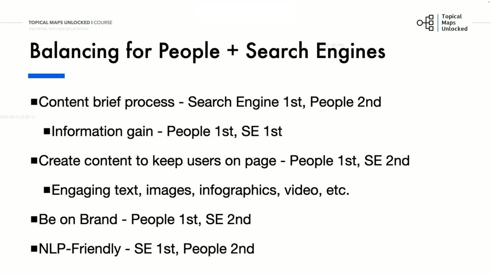
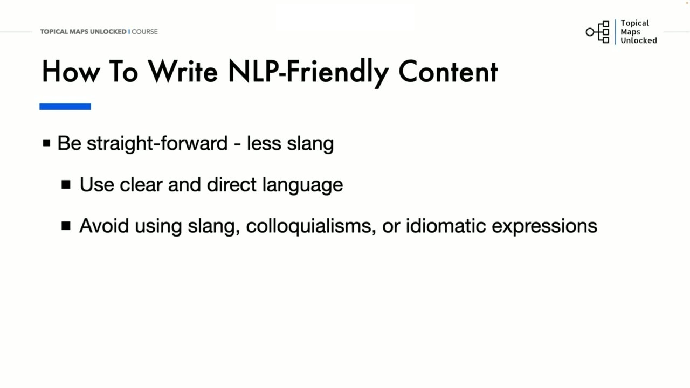
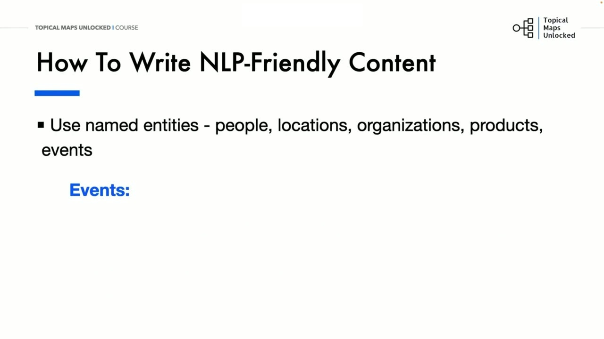
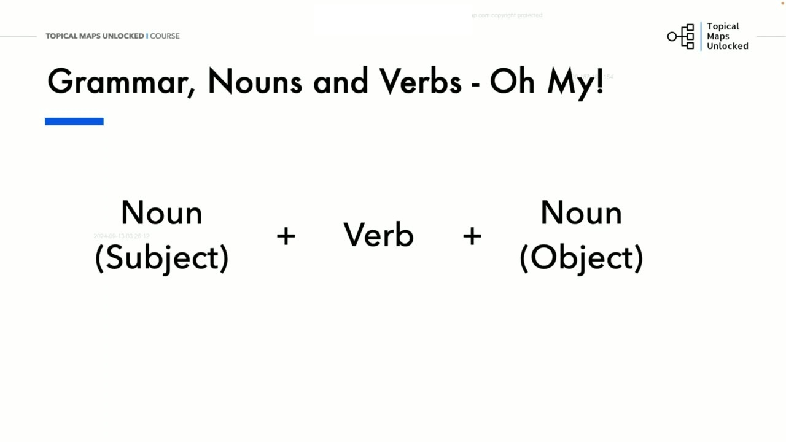
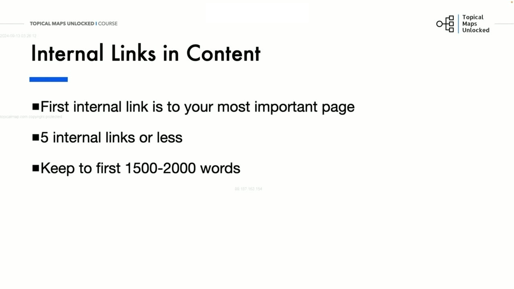
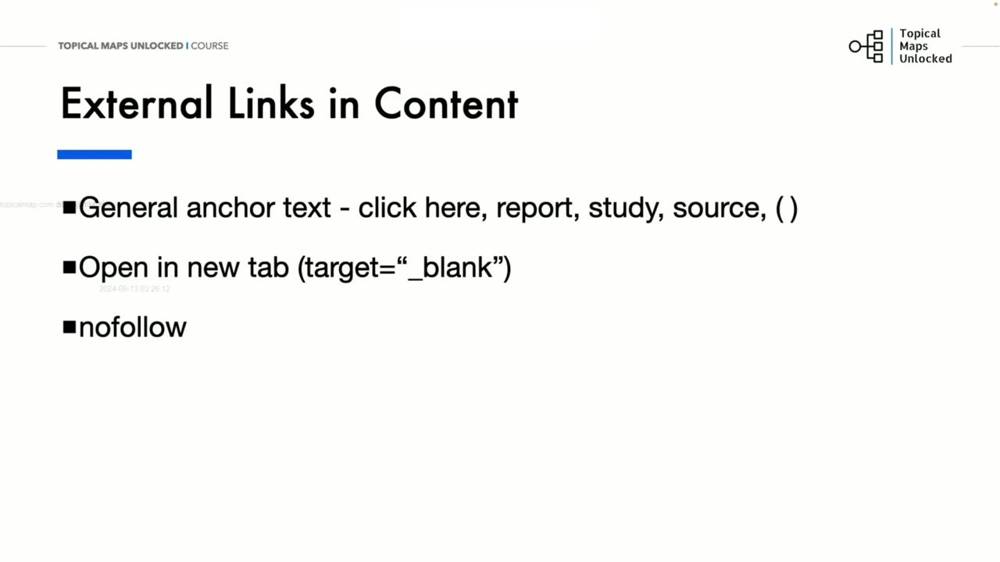

Content Creation
1. Nghịch lý xếp hạng của Google và Sự cân bằng giữa Con người và Thuật toán
Trong bài học trọng tâm đồ sộ nhất của Học phần 08, Yoyao mổ xẻ một nghịch lý trớ trêu tồn tại trong các thông điệp truyền thông chính thức của Google:
Một mặt, Google luôn miệng kêu gọi toàn bộ cộng đồng webmaster: "Hãy sáng tạo nội dung ưu tiên con người (People-first content)! Hãy tạo ra các trang web với suy nghĩ về người dùng trong tâm trí bạn. Đừng bao giờ tạo nội dung chỉ nhằm mục đích tối ưu hóa máy móc cho công cụ tìm kiếm để đạt vị trí cao."
Nhưng mặt khác, chính Google lại khẳng định các công cụ tìm kiếm là kênh cốt lõi không thể thiếu giúp người dùng khám phá ra nội dung của bạn! Điều đó có nghĩa là: Bạn bắt buộc phải xếp hạng cao trên trang kết quả tìm kiếm (SERP) thì độc giả mới có thể thấy bài viết của bạn để đọc, nhưng bạn lại bị cảnh báo không được tạo nội dung nhằm mục đích xếp hạng trong SERP! Vậy một người làm website thực sự phải làm gì trước nghịch lý trớ trêu này?
Yoyao khẳng định: Chúng ta phải tìm ra sự cân bằng hoàn hảo giữa Con người và Công cụ tìm kiếm trong từng khâu của quá trình sản xuất:
- Quy trình lập bản tóm tắt nội dung (Content Brief): Nghiên cứu đối thủ hàng đầu trên SERP để thấu hiểu luật chơi và đáp ứng đúng ý định tìm kiếm (Ưu tiên công cụ tìm kiếm - Search Engine 1st). Nhưng đồng thời, bạn thực hiện các nghiên cứu chuyên sâu bổ sung để thu thập thông tin độc bản và lấp đầy những khoảng trống mà tất cả đối thủ trên SERP còn thiếu sót để giúp độc giả học hỏi thêm được nhiều kiến thức thực tế (Ưu tiên con người - People 1st).
- Tạo giá trị gia tăng độc bản (Information Gain): Cung cấp kiến thức mới, góc nhìn mới và số liệu thực chứng chưa từng có trên internet để thỏa mãn tối đa độc giả mục tiêu. Khi người dùng đánh giá cao, thuật toán tìm kiếm sẽ tự động nhận diện tín hiệu tương tác vượt trội và tưởng thưởng thứ hạng cao bền vững.
- Giữ chân độc giả trên trang (Keep users on page): Thiết kế giao diện và trải nghiệm đọc tuyệt vời với đồ họa thông tin trực quan (infographics), video sinh động, bố cục bảng biểu so sánh và văn bản hấp dẫn, cuốn hút (Ưu tiên con người đứng hàng đầu, công cụ tìm kiếm đứng thứ hai).
- Định vị thương hiệu nhất quán (On-Brand): Duy trì phong cách truyền thông, thông điệp cốt lõi và giọng điệu đặc trưng của thương hiệu để độc giả luôn nhận diện được giá trị riêng biệt và xây dựng niềm tin dài hạn với bạn (Ưu tiên con người 1st, công cụ tìm kiếm 2nd).
- Thân thiện với công nghệ xử lý ngôn ngữ tự nhiên (NLP-Friendly): Tối ưu cấu trúc ngữ pháp và câu từ để thuật toán máy tính dễ dàng giải mã và phân tích dữ liệu cho mục đích xếp hạng (Ưu tiên công cụ tìm kiếm 1st, con người 2nd).
NLP (Natural Language Processing - Xử lý ngôn ngữ tự nhiên) chính là cây cầu nối công nghệ kỳ diệu giữa ngôn ngữ tự nhiên của con người và năng lực tính toán xử lý văn bản của máy tính. Viết chuẩn NLP chính là cách tối ưu hóa hiệu quả nhất cho cả các công cụ tìm kiếm AI hiện đại ngày nay như Google AI Overviews hay Perplexity.

2. Ngữ pháp và Phong cách viết chuẩn NLP: Mức độ trung học cơ sở, Câu chủ động và Trực diện
Làm thế nào để bạn tạo ra các bài viết thân thiện với các hệ thống NLP và các hệ thống AI hiện đại? Yoyao đưa ra các hướng dẫn chuẩn xác về ngữ pháp và cấu trúc câu:
- Sử dụng ngữ pháp Tiếng Anh ở mức độ trung học cơ sở (Middle school grammar level): Đa số người đọc phổ thông và các mô hình ngôn ngữ tự nhiên đều tiếp thu tốt nhất ở cấu trúc câu chuẩn mực, đúng dấu câu và từ vựng phổ thông (tương đương trình độ lớp 7 đến lớp 9). Tránh dùng các từ ngữ quá trừu tượng, bác cổ hay câu văn uốn lượn nhiều tầng nhiều nghĩa. Mức độ ngữ pháp cao hơn chỉ nên áp dụng cho các tài liệu kỹ thuật chuyên ngành đặc thù khi cần giải thích các khái niệm phức tạp (ví dụ: "Để thực hiện các nhiệm vụ cụ thể, bộ vi xử lý thực thi các lệnh được giao cho nó").
- Ưu tiên câu đơn và câu ghép đơn giản: Luôn ưu tiên các câu đơn giản (ví dụ: "Cô ấy thích đọc sách") hoặc câu ghép kết nối bằng liên từ rõ ràng (ví dụ: "Anh ấy hoàn thành bài tập về nhà và sau đó chơi trò chơi điện tử"). Cần tránh các câu phức tạp uốn lượn nhiều tầng mệnh đề phụ như: "Mặc dù anh ấy rất mệt mỏi, nhưng vì hạn chót nộp bài là ngày mai, nên anh ấy vẫn tiếp tục thức khuya để làm việc trên dự án."
- Ngôn từ trực diện, rõ ràng và tránh tiếng lóng (Avoid Slang & Idioms): Luôn sử dụng ngôn ngữ rõ ràng, trực tiếp, tránh sử dụng tiếng lóng, thành ngữ hoặc các cách diễn đạt có thể gây nhầm lẫn cho người đọc không phải là người bản xứ hoặc bị các thuật toán NLP hiểu sai ngữ cảnh. Ví dụ: Hãy viết rõ ràng "Chúng ta sẽ bắt đầu cuộc họp đúng 10 giờ sáng" thay vì dùng các cách nói ẩn dụ bóng gió dễ gây hiểu lầm sang 10 giờ đêm.
- Ngắn gọn và đi thẳng vào vấn đề (Be Concise): Giữ cho bài viết của bạn luôn ngắn gọn, súc tích và đi thẳng vào trọng tâm vấn đề. Loại bỏ triệt để các từ ngữ rườm rà không cần thiết hoặc các mô tả dài dòng không mang lại giá trị gia tăng nào cho thông điệp chính. Ví dụ: Thay vì viết một câu rườm rà dài dòng như "Dự kiến rằng bản báo cáo tiến độ dự án sẽ được hoàn thành và nộp vào ngày mai", bạn chỉ cần diễn đạt gãy gọn: "Tôi sẽ hoàn thành báo cáo vào ngày mai."
- Sử dụng thể chủ động (Active Voice): Luôn viết câu ở dạng chủ động, nơi chủ ngữ trực tiếp thực hiện hành động cụ thể, giúp câu văn trở nên rõ ràng và tác động mạnh mẽ hơn đến tâm trí độc giả. Ví dụ: Viết "Giáo viên đã giải thích bài học" (Active) thay vì "Bài học đã được giải thích bởi giáo viên" (Passive). Câu chủ động luôn tạo ra sự trực diện, giúp người đọc nắm bắt thông tin nhanh chóng và thuật toán trích xuất thực thể chính xác 100%.

3. Làm giàu trường ngữ nghĩa: Từ đồng nghĩa, Bối cảnh nền tảng và Thực thể có tên cụ thể
Bên cạnh cấu trúc ngữ pháp, tầng thông tin bên trong câu văn đóng vai trò quyết định khả năng nhận diện chủ đề của các thuật toán tìm kiếm:
- Bao gồm các từ khóa và chủ đề liên quan (Related Keywords & Topics): Kết nối các khái niệm có liên quan mật thiết vào trong cùng một câu văn để củng cố tín hiệu chủ đề và cải thiện khả năng khám phá nội dung. Ví dụ: Nếu chủ đề chính của bạn là Tiếp thị kỹ thuật số (Digital Marketing), các từ khóa và chủ đề liên quan mật thiết sẽ là chiến lược SEO, tiếp thị nội dung và tiếp thị mạng xã hội. Kết hợp chúng trong một câu chuẩn ngữ cảnh: "Tiếp thị kỹ thuật số bao gồm chiến lược SEO, tiếp thị nội dung và tiếp thị mạng xã hội."
- Sử dụng từ đồng nghĩa và các biến thể tự nhiên (Synonyms & Word Variations): Luân phiên sử dụng các từ ngữ và cụm từ khác nhau nhưng mang cùng ý nghĩa để bài viết tự nhiên hơn, hấp dẫn hơn và tiếp cận được nhiều tệp độc giả khác nhau. Ví dụ: Thuật ngữ gốc là sống khỏe mạnh, các từ đồng nghĩa và biến thể tương ứng có thể là sự khỏe mạnh, rèn luyện thể dục và chế độ dinh dưỡng. Câu văn kết hợp hài hòa: "Một lối sống lành mạnh bao gồm việc rèn luyện thể dục thường xuyên và ăn uống đầy đủ dinh dưỡng."
- Cung cấp đầy đủ bối cảnh và thông tin nền tảng (Context & Background Info): Cung cấp đầy đủ định nghĩa và kiến thức nền tảng để người đọc và hệ thống NLP thấu hiểu khái niệm từ gốc rễ. Độc giả đến với website của bạn là để tìm hiểu cặn kẽ về chủ đề đó, vì vậy hãy giải thích rõ ràng. Ví dụ: Giả sử ngữ cảnh là định nghĩa về Trí tuệ nhân tạo (AI), thông tin nền tảng cần bổ sung là AI giúp máy móc thực hiện các nhiệm vụ thông minh của con người như khả năng thấu hiểu ngôn ngữ. Câu văn hoàn chỉnh: "Trí tuệ nhân tạo (AI) cho phép máy tính thực hiện các nhiệm vụ của con người như thấu hiểu ngôn ngữ tự nhiên."
- Khai thác tối đa các thực thể được đặt tên cụ thể (Named Entities): Đây là bí quyết quan trọng nhất để kết nối nội dung vào Đồ thị tri thức (Knowledge Graph) của Google. Hãy thay thế triệt để các danh từ chung chung bằng tên riêng cụ thể:
- Về con người: Thay vì nói chung chung "các nhà khoa học", hãy chỉ định đích danh thực thể: "Albert Einstein đã phát triển thuyết tương đối".
- Về tổ chức: Thay vì nói "một công ty công nghệ lớn", hãy gọi tên chính xác: "Google hoặc Microsoft đã công bố một tính năng mới cho công cụ tìm kiếm của mình".
- Về địa điểm: Thay vì nói "một thành phố nổi tiếng", hãy viết rõ ràng: "Thành phố New York nổi tiếng với nền văn hóa đa dạng và các địa danh mang tính biểu tượng".
- Về sản phẩm: Thay vì nói "một chiếc điện thoại thông minh phổ biến", hãy gọi đích danh: "iPhone 16 cung cấp nhiều tính năng camera tiên tiến vượt trội".
- Về sự kiện và thời gian: Thay vì nói mơ hồ "một sự kiện lịch sử quan trọng", hãy nêu đích danh: "Thế vận hội 2024 được tổ chức tại Paris, Pháp" hoặc "Các thành viên hội đồng đã gặp nhau để thảo luận chính sách mới vào ngày 15/7/2024".
Sự hiện diện chính xác của các thực thể có tên giúp thuật toán định vị không gian kiến thức của bài viết một cách tuyệt đối, loại bỏ mọi sự nhập nhằng trong quá trình hiểu văn bản.

4. Cấu trúc ngữ pháp cốt lõi cho NLP: Danh từ + Động từ + Danh từ (Noun + Verb + Noun)
Yoyao đi sâu vào cấu trúc câu ngữ pháp cơ bản nhất nhưng lại có sức mạnh giải mã vượt trội đối với công nghệ xử lý ngôn ngữ tự nhiên hiện đại:
Noun (Subject / Chủ ngữ) + Verb (Động từ hành động) + Noun (Object / Tân ngữ)
Tùy thuộc vào ai hoặc cái gì đang thực hiện hành động, các danh từ được chia thành chủ ngữ và tân ngữ. Chủ ngữ thực hiện hành động trong khi tân ngữ là đối tượng tiếp nhận hành động đó:
- Ví dụ cơ bản: "Con chó ăn thức ăn" (Con chó là chủ ngữ vì nó thực hiện động từ ăn; thức ăn là tân ngữ vì nó tiếp nhận hành động ăn từ con chó).
- Trường hợp bổ sung tính từ miêu tả: Đôi khi câu không có tân ngữ mà chỉ có tính từ miêu tả chủ ngữ (ví dụ: "Quả bóng màu đỏ", màu đỏ là tính từ miêu tả danh từ chủ ngữ quả bóng).
- Kết hợp tính từ và tân ngữ: Khi tính từ miêu tả tân ngữ (ví dụ: "Con chó ăn thức ăn khô"; con chó là chủ ngữ, ăn là động từ, thức ăn là tân ngữ, và khô là tính từ miêu tả tân ngữ thức ăn).
Áp dụng vào thực tế sáng tạo nội dung chuyên nghiệp: Xét câu văn mẫu chuẩn mực: "My writers create NLP-friendly content."
- Chủ ngữ (Subject): My writers (Những người viết của tôi là người thực hiện hành động).
- Động từ (Verb): Create (Tạo ra).
- Tân ngữ (Object): Content (Nội dung tiếp nhận hành động của động từ tạo ra).
- Tính từ (Adjective): NLP-friendly (Thân thiện với NLP là tính từ bổ nghĩa cho tân ngữ nội dung).
So sánh đối chiếu với một câu phức tạp quá mức: Yoyao phân tích câu văn dài dòng truyền tải cùng một thông điệp: "Đội ngũ những người viết tài năng và giàu kinh nghiệm của tôi rất giỏi trong việc tạo ra nội dung không chỉ hấp dẫn và cung cấp thông tin cho người đọc, mà còn được cấu trúc theo cách phù hợp với các thực hành tốt nhất mới nhất trong xử lý ngôn ngữ tự nhiên, đảm bảo rằng tài liệu dễ dàng được diễn giải và sử dụng bởi các hệ thống AI tiên tiến."
Mặc dù câu văn này hoàn toàn đúng ngữ pháp, nhưng nó quá dài dòng và nhồi nhét quá nhiều tính từ, cụm từ miêu tả bổ trợ làm giảm đi thông điệp chính. Cả người đọc lẫn các hệ thống máy học NLP hiện tại đều sẽ gặp rất nhiều khó khăn để theo dõi và phân tích cú pháp câu phức tạp này. Vì vậy, trong vòng vài năm tới cho đến khi các hệ thống AI đủ tiên tiến để phân tích tức thì mọi cấu trúc, việc giữ cấu trúc câu tinh gọn, rõ ràng theo mô hình Danh từ + Động từ + Danh từ luôn là sự lựa chọn khôn ngoan nhất.
Đối với thị trường mục tiêu nói tiếng Anh (như Hoa Kỳ), bạn nên giữ bài viết ở mức đọc hiểu lớp 7 đến lớp 9. Đồng thời cần lưu ý sự khác biệt văn hóa và biến thể ngôn ngữ theo từng thị trường mục tiêu (ví dụ: Tiếng Trung phồn thể dành cho Hồng Kông, Đài Loan trong khi Tiếng Trung giản thể dành cho Trung Quốc đại lục).

5. Bằng chứng từ rò rỉ API Google và Chiến lược đặt Liên kết nội bộ (Internal Links)
Yoyao tiết lộ một thông tin vô cùng đắt giá: Những kinh nghiệm tối ưu hóa này không chỉ đến từ hàng ngàn thử nghiệm thực tế của ông mà còn được xác nhận chính thức qua tài liệu rò rỉ API kho nội dung của Google (Google Content Warehouse API Leaks)!
Tài liệu rò rỉ đã vén màn các mô-đun và thuộc tính thuật toán cụ thể mà Google sử dụng trong hệ thống xếp hạng để đánh giá chất lượng và bối cảnh của liên kết:
- Liên kết nội bộ đầu tiên phải là liên kết quan trọng nhất: Trong hầu hết mọi trường hợp, liên kết xuất hiện đầu tiên trong bài viết nên dẫn đến chủ đề rộng hơn trong hệ thống phân cấp chủ đề (Trang trụ cột / Pillar page), hoặc dẫn trực tiếp đến một trang kiếm tiền / trang sản phẩm dịch vụ cốt lõi của bạn. Vị trí xuất hiện càng sớm trong bài viết thì giá trị thẩm quyền truyền dẫn và tỷ lệ nhấp chuột thực tế càng cao.
- Kiểm soát số lượng: 5 liên kết nội bộ đi ra trở xuống trong nội dung chính: Giữ tối đa khoảng 5 liên kết nội bộ trong phần thân bài để ngăn chặn sự phân tán sức mạnh liên kết (link juice dilution). Khi bạn đặt quá nhiều link (người viết cứ cách vài câu lại chèn một liên kết), sức mạnh truyền dẫn sẽ bị phân mảnh nhỏ giọt và độc giả sẽ cảm thấy bị quấy rầy. Giới hạn 5 liên kết là một kim chỉ nam tuyệt vời giúp giữ sự tập trung cao nhất cho các trang đích quan trọng.
- Đặt liên kết trong phạm vi 1.500 đến 2.000 từ đầu tiên: Google thường có cơ chế cắt ngắn (truncation) nội dung khi lưu trữ và xử lý các bài viết quá dài trong bộ nhớ đệm. Do đó, việc dồn các liên kết nội bộ quan trọng vào khoảng 1.500 đến 2.000 từ đầu bài là một ngưỡng an toàn tuyệt đối giúp đảm bảo các liên kết luôn được bot tìm kiếm ghi nhận và tính điểm đầy đủ.
- Neo văn bản (Anchor text) đa dạng và mang tính mô tả: Google ghi lại toàn bộ các biến thể và sự lặp lại của văn bản neo. Việc sử dụng các cụm neo mô tả chính xác nội dung trang đích, kết hợp với ngữ cảnh của các câu văn xung quanh neo văn bản, sẽ cung cấp cho Google chỉ số đánh giá ngữ nghĩa hoàn hảo nhất về mối quan hệ giữa hai bài viết.

6. Chiến lược đặt Liên kết ngoài (External Links) và Lời khuyên đúc kết toàn diện
Bên cạnh liên kết nội bộ, việc trích dẫn các Liên kết bên ngoài (External Links) giúp gia tăng độ uy tín, tính khách quan và chứng thực cho các dữ liệu được trình bày trong bài:
- Sử dụng neo văn bản tự nhiên và chung chung: Đối với liên kết trỏ ra trang ngoài, Yoyao khuyên nên sử dụng các từ neo chung như "nhấp vào đây, báo cáo, nghiên cứu, nguồn" hoặc các ký hiệu chú thích nằm trong ngoặc đơn, thay vì dùng từ khóa SEO chính xác của bạn để trỏ ra ngoài.
- Cấu hình kỹ thuật an toàn: Luôn thiết lập thuộc tính
target="_blank"để liên kết mở ra trong một thẻ trình duyệt mới, và thêm thuộc tínhrel="nofollow"để cố gắng giữ lại sức mạnh liên kết trên trang của bạn. - Chỉ liên kết đến các trang có thẩm quyền cực cao trong ngành: Ưu tiên các trang web học thuật (tên miền
.edu), các cơ quan nghiên cứu chính phủ (tên miền.gov) hoặc các báo cáo chuyên ngành chính thống. Yoyao cho biết ông hiếm khi liên kết đến Wikipedia và luôn đảm bảo trang web được trích dẫn có mối liên hệ mật thiết với chủ đề bài viết. - Vị trí đặt liên kết ngoài: Đặt các liên kết nguồn tham khảo ở phần cuối bài viết trong mục Tài liệu tham khảo, trừ trường hợp trích dẫn số liệu thống kê cụ thể thì nguồn cần được dẫn chứng trực tiếp ngay trong câu văn đó.
Lời khuyên chiến lược đúc kết từ Yoyao:
"Hãy luôn tập trung vào đối tượng độc giả mục tiêu của bạn trước tiên, sau đó mới đến công cụ tìm kiếm!" Sáng tạo nội dung là một quy trình nghệ thuật giàu tính nhân văn và sáng tạo khi bạn viết cho các nhân vật độc giả của mình. Sau đó, nó chuyển thành một quy trình kỹ thuật chuẩn xác khi bạn chỉnh sửa và biên tập để bài viết trở nên thân thiện với NLP và các thuật toán tìm kiếm.
Không có bất kỳ quy tắc cứng nhắc nào áp dụng chung cho mọi nội dung. Luôn có ngoại lệ cho mọi thứ! Mọi ngách và ngành công nghiệp khác nhau sẽ có những đặc thù riêng biệt; điều hiệu quả ở ngách này có thể hoàn toàn không hiệu quả ở ngách khác. Vì vậy, cách tốt nhất để tìm ra điều gì thực sự hiệu quả cho website của bạn là: Tự mình thử nghiệm, đo lường và tinh chỉnh liên tục không ngừng!

Nguồn và đối chiếu
- Topical Maps Unlocked 2.0 · 03-Content Creation (Video bài học chính).
- Bản tiếng Anh không có video riêng cho bài học này; nội dung đối chiếu trực tiếp từ slide và video chính.